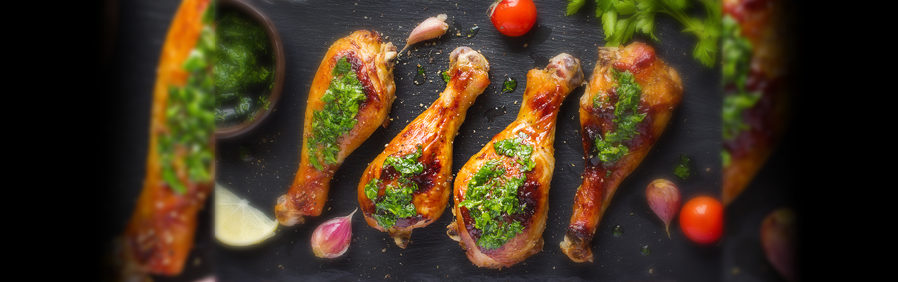

RECETAS SALADAS
POLLO FRITO

Ingredientes
- 1kg de alitas de pollo
- 1 vaso de harina de trigo todo uso
- 2 vasos de pan rallado o molido
- 1 cucharadita de las especias que elijas (cayena o chile en polvo, pimienta negra molida, ajo y cebolla en polvo, paprika)
- 1 huevo y 200ml de leche
- sal y pimienta
- aceite para freir
Procedimiento
- Cortamos las alitas del pollo. Con un cuchillo muy afilado las cortamos por la articulación. La puntillita que no nos sirve, la retiramos. Nos sirve para hacer un caldo con ellas.
- Preparamos lo que será el rebozado exterior. Ponemos el huevo y la leche en un plato hondo y batimos ambos ingredientes. Hasta que quede una mezcla de color crema y sin grumos del huevo.
- En otro plato preparamos la otra parte del empanizado. Ponemos la harina, el pan rallado, las especias (puedes poner las que quieras pero las sugeridas en el apartado de ingredientes, quedan muy muy bien) y mezclamos todos los ingredientes con las manos hasta que queden todos homogéneamente mezclados.
- Pasamos las alitas por la mezcla de harina pan rallado y especias, después por la mezcla del huevo y la leche y después nuevamente por la mezcla de harina y pan rallado. Que quede bien embadurnado de estos ingredientes. Reservamos en un plato hasta haber terminado de empanar todas las alitas.
- Una vez empanadas, metemos las alitas en la nevera durante una hora para que el empanado exterior se asiente bien.
- Finalmente, freímos las alitas en abundante aceite, durante unos 5 minutos. El aceite debe estar caliente, pero tampoco demasiado para que las alitas se frían bien su interior sin que el empanizado exterior llegue a quemarse.
PIZZA

Ingredientes para 2 pizzas
- 1/2 kilo de harina 000
- 25 gr de pan de levadura fresco
- 1/2 cucharada de sal
- 4 cdas de aceite de oliva
- 1 cda de azúcar
- 1 taza de agua tibia
Procedimiento
- En un bol o taza colocar la levadura y media taza de agua tibia, agregar la cucharada de azúcar. Mezclar bien hasta que se formen burbujitas. Tapar con un nylon y dejar levar mas o menos 10 minutos.
- En otro bol, colocar la harina y mezclarla con la sal. Hacer un hueco en el centro, y luego volcar la media taza de agua con la levadura. Incorporar el resto del agua tibia. Unir con las manos todos los ingredientes hasta formar una masa. Agregar en forma de hilo el aceite y volver a amasar.
- Dejar descansar la masa para pizza unos 15 minutos, y luego amasarla en una mesa con harina. Dividir la masa en dos bollos del mismo tamaño.
- Estirar la masa hasta lograr un círculo. Poner la masa en una fuente para pizza, dejar descansar en lugar templado hasta que leve un poquito. Aproximadamente 15 minutos.
- Llevar a un horno fuerte unos 6 minutos. Esto es muy importante para que la masa para pizza quede bien cocida (principalmente la parte entre los ingredientes y la masa, si salteamos este punto quedará húmeda y cruda).
- Agregar una cucharada abundante de salsa de tomate y llevar al horno 2 minutos más.
FIDEOS CON SALSA BOLOGNESA

Ingredientes para la Masa
- 400 harina 000
- 4 huevos
- 2 cdas aceite
- 1/2 cda sal
Ingredientes para la Salsa
- 1/2 carne picada
- condimentos: sal, orégano, pimienta, provensal, comino a gusto
- 1/2 puré de tomate
- 2 cebollas
- 1/2 zanahoria
- 1/2 morrón
Procedimiento
- Salsa: picar las verduras y cocinarlas, agregar la carne y los condimentos una ves cocinados agregar el tomate hasta que esté listo.
- Fideos: En un bowl colocar la harina, los huevos, la sal y el aceite. Mezclar todo.
- Amasar y formar un bollo dejarlo descansar 15', luego cortar el bollo en cinco partes y a cada uno estirar con el palo de amasar bien fino y dejarla descansar 15'
- Ir enrollando la masa y cortar en pequeños pedazos del tamaño deseado para los fideos y dejarlos ventilar por 1/2 hora
- Cocinar una vez que hierva el agua por 10' aproximadamente.
- Por ultimo servir una porción con la salsa por arriba.
TACOS DE TERNERA
Ingredientes
- 500 g de carne picada de ternera
- 1 cebolla pequeña
- 1 chile verde fresco o serrano
- 2 dientes de ajo
- 1 cucharada de comino en polvo
- 1/2 cucharadita (o al gusto) de chile seco
- 1 cucharada de orégano
- aceite de oliva
- el zumo de 1/2 lima
- sal
- cilantro
- 8-1o tortillas de maíz
Procedimiento
- Picar la cebolla, el chile fresco, el cilantro y el ajo por separado y reservar.
- Calentar 2 o 3 cucharadas de aceite en una sartén y sofreír con el orégano, el comino y el chile seco, unos dos minutos hasta que empiece a soltar aroma.
- Añadir el ajo y el chile y sofreír 2 o 3 minutos más.
- Añadir la carne, salar y remover, y dejar cocinar hasta que la carne esté hecha, unos 10 minutos.
- Apagar el fuego, añadir el cilantro picado y el zumo de lima y remover.
- Calentar las tortillas en el horno por 1 o 2 minutos, solo se tienen que calentar. También podéis dorarlas un poco como hemos visto antes (colgadas de la rejilla) si queréis que queden crujientes. Rellenar con la carne y servir llevando a la mesa los ingredientes para acompañar por separado, para que cada uno se prepare su taco como prefiera.